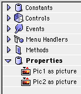

Cover Story
New QuickTime features
Like it or not, you have to admit that QuickTime is one of Apple's most impressive and widespread technologies. However, up until recently, you could do very little with it.
In the past, there were only two things you could do with movies: load them to a movie object, and put them into a MoviePlayer control. Not so any more!
Beginning with DR2r18, RB has some genuine power over QuickTime. This tutorial will show you how to use this to create a smooth transition between two different pictures, and save it as a compressed movie.
In order to give you this control, RB uses several classes and methods. Here they are:
| Classes | |
| Movie | This isn't new, but it has an important new method: NewVideoTrack. |
| QTEffect | This contains a QT3 transition |
| QTEffectSequence | This is a sequence of frames based off a QuickTime effect. You can get individual frames in a transition from this. |
| QTVideoTrack | This is a video track from a QT Movie. You'll use this to compress the movie, and to add individual frames |
| Methods | |
| GetQTCrossFadeEffect | This returns a QTEffect object that gradually fades from one image to another. Very, very useful. |
| GetQTSMPTEeffect | This returns a standard SMPTE QuickTime effect based off an ID (check out this list for details). |
Setting up the interface
To start off, make a window with two canvas controls on the left, a movie player control on the right, and a big button that says "Make Movie" on the lower-right, like the window to the right. If you've never used a movieplayer control before, its icon on the toolbar is 11th from the top, and is in the second column. It looks like this:
The two canvas controls will hold the two pictures that we want to make
a transition between. The "Make Movie" button will make the movie (how
intuitive...), and the movieplayer control will show the movie. Clever, eh?
Setting up the code
First off, we'll need to create two picture variables to hold the
two base images. We'll call these Pic1, and Pic2. Open up the code editor for the
window, and add them, like so:
Getting the pictures
Before we can make a transition between Pic1 and Pic2, we'll need to provide a way to decide what Pic1 and Pic2 are! The way we'll do this is simple: When a user clicks one of the canvases, an open dialog pops up. This lets them select a picture. Here's how to do it...
First of all, open up the Types dialog by choosing "File Types..." from the Edit menu. You'll see a window with an Add button at the bottom left. Click it. Then, type this in the window that shows up:
After you're done with that, click OK on both the Add File dialog, and the File Types dialog.
Now, we'll add the code to select the pictures.
In Canvas1's MouseDown event, put the following code:
Function MouseDown(X as integer,Y as integer) as boolean
Dim f as folderItem
f=GetOpenFolderItem("Picture")
if f<>nil then
pic1=f.OpenAsPicture
me.Backdrop=pic1
end if
End Function
In the MouseDown event for Canvas2, put this:
Function MouseDown(X as integer,Y as integer) as boolean
Dim f as folderItem
f=GetOpenFolderItem("Picture")
if f<>nil then
pic2=f.OpenAsPicture
me.Backdrop=pic2
end if
End Function
These bits of code are fairly simple. First, they put up an Open box. Then, they check to see if you clicked cancel. If you didn't, then they put the picture in Pic1 or Pic2 (depending on which Canvas), and put that picture in their backdrop, so that you can see it.
Making the transition
Now comes the interesting part—making a transition. Here's how we'll do it:
Sound complicated? After you work with it for a while, you'll find that it's really quite intuitive.
The Variables
This routine will have several variables (they're mentioned in the previous section). Here's what you'll want to start off PushButton1's Action event with:
dim m as movie
dim f as folderitem
dim t as QTEffectSequence
Dim v as QTVideoTrack
dim i as integer
dim b as boolean
Making the movie
To make the movie file, we'll need to get a folderitem, and a movie object. It's fairly simple. Just these lines of code:
f=GetFolderitem("RB Monthly Rules")
m=f.CreateMovie
Like I said, pretty darned simple!
Making a Video Track
Anyone who's used PhotoShop should be instantly at home with QuickTime's Video Tracks. They're just like layers. If you haven't used PhotoShop, then they're still fairly simple. A Video Track contains a bunch of images that are in the movie. Movies can have multiple video tracks, but there aren't a whole lot of uses for this outside of Movie making programs like Premiere.
Also, since we'll want to compress this video, we must call the videotrack's SelectCompressionSettings method. This will cause a standard "select compression settings" dialog to pop up.
Anyway, here's the code to get the video track which, in case you've forgotten, is called v.
v=m.NewVideoTrack(pic1.Width,pic1.Height,1)
b=v.SelectCompressionSettings
The first parameter of the NewVideoTrack method is the width of the
videotrack. Since we want it to be the same size as the picture, we use pic1.width.
The same is true for the second parameter, which is the height. The third parameter
is the "timeScale", but I have no idea what it does (experienced QT people,
e-mail me!)
The Effect Sequence
This is probably the most important part of this project.This part of the code will create an effect sequence that meets our precise needs. It'll be a simple fade between pic1 and pic2 that's 45 frames long. Here's the code:
t=new QTEffectSequence(GetQTCrossFadeEffect, Pic1, Pic2, 45)
That code makes use of a new "constructor" system in RB that lets you use parameters in a line where you make an object using the new command. This is common in C and Java, and will probably be common in RB too.
Adding the frames
Now, we'll need to add frames to the movie (or, more accurately, the video track). Since we've already made the Effect sequence, we just need to go through all 45 frames, and copy them from the sequence to the video track. Here's the code:
For I=1 to 45
t.Frame=I
v.AppendPicture t.Image
Next
Simple enough. Now, let's display the movie:
MoviePlayer1.Movie=m
Wrapping Up
For those of you who like to see the code as a whole, here's a screenshot, just for you:
Testing
Now, to test the program! For the grand test, I'll use these two images–the calculator from System 1.0, and the calculator from Mac OS 8.
Run the program, and load the two images. Then, click the Make Movie button. If all goes well, then you should see a "select compression" dialog. The defaults will work fine. After you hit OK in the compression dialog, you'll have your lovely transition!
Problems
As with many new features, the movie features have some problems. Here they are, and some workarounds for them:
1) The Play button doesn't play the movie in the MoviePlayer control. You can view it by holding down the Fast Forward button, however.
2) Be sure to quit your program before trying to open the movie file in another program. If you don't, you'll get a "This file is not a movie" error. Also, oddly enough, the Play button will work fine if you view the movie in Apple's MoviePlayer program.
In Conclusion
That's how you make a movie! RB and QuickTime's transition capabilities make simple movie-making fairly simple. Just add frames, and generate effects. If the movie features in RB improve, and allow you to use sound, and access more effects (there are a lot of 'em, including the ever-popular flaming and explosion transitions...), RB will be a serious contender for making movies. Hooray!
Extra Stuff
If you've been especially moved by this article, you may want to try doing these things: